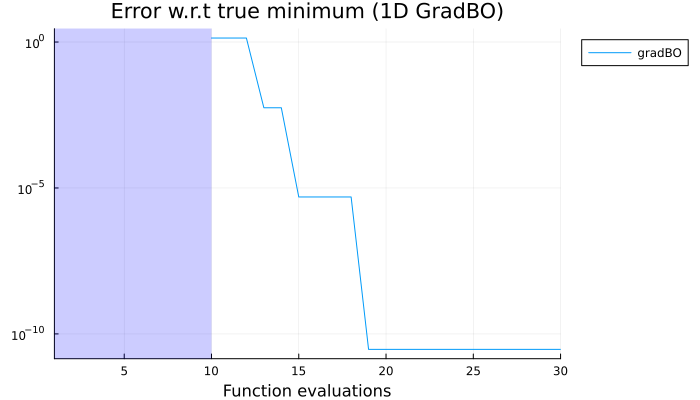

AbstractBayesOpt Tutorial: 1D Bayesian Optimisation
Setup
Loading the necessary packages.
using AbstractBayesOpt
using AbstractGPs
using ForwardDiff
using PlotsDefine the objective function
We will optimise a simple 1D function: $f(x) = (x-2)^2 + \sin(3x)$
f(x) = (x - 2)^2 + sin(3x)
d = 1
domain = ContinuousDomain([0.0], [5.0])Standard GPs
We'll use a standard Gaussian Process surrogate with a Matérn 5/2 kernel. We add a small jitter term for numerical stability of $10^{-12}$.
noise_var = 1e-12
surrogate = StandardGP(Matern52Kernel(), noise_var)StandardGP{Float64}(AbstractGPs.GP{AbstractGPs.ZeroMean{Float64}, KernelFunctions.ScaledKernel{KernelFunctions.TransformedKernel{KernelFunctions.Matern52Kernel{Distances.Euclidean}, KernelFunctions.ScaleTransform{Float64}}, Float64}}(AbstractGPs.ZeroMean{Float64}(), Matern 5/2 Kernel (metric = Distances.Euclidean(0.0))
- Scale Transform (s = 1.0)
- σ² = 1.0), 1.0e-12, nothing)Generate uniform random samples x_train and evaluate the function at these points to get y_train.
n_train = 5
x_train = first.([
domain.lower .+ (domain.upper .- domain.lower) .* rand(d) for _ in 1:n_train
])
y_train = f.(x_train)5-element Vector{Float64}:
1.2995813599341142
0.5179286028794444
0.9192097626323938
1.3961489787170538
1.2427322328731445Choose an acquisition function
We'll use the Expected Improvement acquisition function with an exploration parameter ξ = 0.0.
ξ = 0.0
acq = ExpectedImprovement(ξ, minimum(y_train))ExpectedImprovement{Float64}(0.0, 0.5179286028794444)Set up the Bayesian Optimisation structure
We use BOStruct to bundle all components needed for the optimisation. Here, we set the number of iterations to 5 and the actual noise level to 0.0 (since our function is noiseless). We then run the optimize function to perform the Bayesian optimisation.
bo_struct = BOStruct(
f,
acq,
surrogate,
domain,
x_train,
y_train,
30, # number of iterations
0.0, # Actual noise level (0.0 for noiseless)
)
@info "Starting Bayesian ..."
result, acq_list, standard_params = AbstractBayesOpt.optimize(
bo_struct; standardize="mean_only"
);[ Info: Starting Bayesian ...
[ Info: Standardization choice: mean_only
[ Info: Standardization parameters: μ=1.07512018740723, σ=1.0
[ Info: Optimizing GP hyperparameters at iteration 1...
[ Info: New parameters: ℓ=[0.15948842499193144], variance =[0.10327371202126787]
[ Info: Iteration #1, current min val: 0.5179286028794444
[ Info: Acquisition optimized, new candidate point: 2.177257843364029
[ Info: Iteration #2, current min val: 0.27745616783404387
[ Info: Acquisition optimized, new candidate point: 2.1223870420181807
[ Info: Iteration #3, current min val: 0.09885574301038724
[ Info: Acquisition optimized, new candidate point: 2.077799806912192
[ Info: Iteration #4, current min val: -0.04371251220030296
[ Info: Acquisition optimized, new candidate point: 2.0391804686539956
[ Info: Iteration #5, current min val: -0.16335234375248628
[ Info: Acquisition optimized, new candidate point: 2.0041670612741735
[ Info: Iteration #6, current min val: -0.267373348000345
[ Info: Acquisition optimized, new candidate point: 1.9719571023459173
[ Info: Iteration #7, current min val: -0.35832349529552865
[ Info: Acquisition optimized, new candidate point: 1.941968027335281
[ Info: Iteration #8, current min val: -0.43814259436941627
[ Info: Acquisition optimized, new candidate point: 1.9139028329190748
[ Info: Iteration #9, current min val: -0.5079893797621805
[ Info: Acquisition optimized, new candidate point: 1.8875206334783818
[ Info: Iteration #10, current min val: -0.5688908170247975
[ Info: Acquisition optimized, new candidate point: 1.8626561311348364
[ Info: Optimizing GP hyperparameters at iteration 11...
[ Info: New parameters: ℓ=[1.7598559933518663], variance =[5.35650657927154]
[ Info: Iteration #11, current min val: -0.621688687577332
[ Info: Acquisition optimized, new candidate point: 8.60323240267251e-12
[ Info: Iteration #12, current min val: -0.621688687577332
[ Info: Acquisition optimized, new candidate point: 1.6043297588552197
[ Info: Iteration #13, current min val: -0.8383891166577014
[ Info: Acquisition optimized, new candidate point: 1.6463231757153827
[ Info: Iteration #14, current min val: -0.8493529635615774
[ Info: Acquisition optimized, new candidate point: 4.9999999999955
[ Info: Iteration #15, current min val: -0.8493529635615774
[ Info: Acquisition optimized, new candidate point: 1.6518828932227294
[ Info: Iteration #16, current min val: -0.8493724565732267
[ Info: Acquisition optimized, new candidate point: 1.6494249835876766
[ Info: Iteration #17, current min val: -0.8494048255547759
[ Info: Acquisition optimized, new candidate point: 1.04375
[ Info: Iteration #18, current min val: -0.8494048255547759
[ Info: Acquisition optimized, new candidate point: 1.43625
[ Info: Iteration #19, current min val: -0.8494048255547759
[ Info: Acquisition optimized, new candidate point: 4.17725
[ Info: Iteration #20, current min val: -0.8494048255547759
[ Info: Acquisition optimized, new candidate point: 1.68575
[ Info: Optimizing GP hyperparameters at iteration 21...
[ Info: New parameters: ℓ=[3.084261907169767], variance =[74.09034636968303]
[ Info: Iteration #21, current min val: -0.8494048255547759
[ Info: Acquisition optimized, new candidate point: 0.48175
[ Info: Iteration #22, current min val: -0.8494048255547759
[ Info: Acquisition optimized, new candidate point: 1.65225
[ Info: Iteration #23, current min val: -0.8494048255547759
[ Info: Acquisition optimized, new candidate point: 3.52725
[ Info: Iteration #24, current min val: -0.8494048255547759
[ Info: Acquisition optimized, new candidate point: 1.36075
[ Info: Iteration #25, current min val: -0.8494048255547759
[ Info: Acquisition optimized, new candidate point: 2.48025
[ Info: Iteration #26, current min val: -0.8494048255547759
[ Info: Acquisition optimized, new candidate point: 3.5302500000000006
[ Info: Iteration #27, current min val: -0.8494048255547759
[ Info: Acquisition optimized, new candidate point: 3.2197500000000003
[ Info: Iteration #28, current min val: -0.8494048255547759
[ Info: Acquisition optimized, new candidate point: 0.55825
[ Info: Iteration #29, current min val: -0.8494048255547759
[ Info: Acquisition optimized, new candidate point: 2.94975
[ Info: Iteration #30, current min val: -0.8494048255547759
[ Info: Acquisition optimized, new candidate point: 2.13275Results
The result is stored in result. We can print the best found input and its corresponding function value.
Optimal point: 1.6494249835876766
Optimal value: -0.8494048255547759Plotting of running minimum over iterations
The running minimum is the best function value found up to each iteration.
p = Plots.plot(
n_train:length(running_min),
running_min[n_train:end] .- min_f;
yaxis=:log,
title="Error w.r.t true minimum (1D BO)",
xlabel="Function evaluations",
label="BO",
xlims=(1, length(running_min)),Gradient-enhanced GPs
Now, let's see how to use gradient information to improve the optimisation. We'll use the same function but now also provide its gradient. We define a new surrogate model that can handle gradient information, specifically a GradientGP.
grad_surrogate = GradientGP(ApproxMatern52Kernel(), d + 1, noise_var)
ξ = 0.0
acq = ExpectedImprovement(ξ, minimum(y_train))
∂f(x) = ForwardDiff.derivative(f, x)
f_∂f(x) = [f(x); ∂f(x)];Generate value and gradients at random samples
y_train_grad = f_∂f.(x_train)5-element Vector{Vector{Float64}}:
[1.2995813599341142, -0.7061930870502873]
[0.5179286028794444, 3.1755096265129925]
[0.9192097626323938, 2.690325882093927]
[1.3961489787170538, 1.7301132677036684]
[1.2427322328731445, 0.39211734597424464]Set up the Bayesian Optimisation structure
bo_struct_grad = BOStruct(
f_∂f,
acq,
grad_surrogate,
domain,
x_train,
y_train_grad,
10, # number of iterations
0.0, # Actual noise level (0.0 for noiseless)
)
result_grad, acq_list_grad, standard_params_grad = AbstractBayesOpt.optimize(
bo_struct_grad; standardize="mean_only"
);[ Info: Starting Bayesian Optimisation...
[ Info: Standardization choice: mean_only
[ Info: Standardization parameters: μ=[1.07512018740723, 0.0], σ=[1.0, 1.0]
[ Info: Optimizing GP hyperparameters at iteration 1...
[ Info: New parameters: ℓ=[1.832283097069778], variance =[10.029452050817197]
[ Info: Iteration #1, current min val: 0.5179286028794444
[ Info: Acquisition optimized, new candidate point: 0.8651287795222714
[ Info: Iteration #2, current min val: 0.5179286028794444
[ Info: Acquisition optimized, new candidate point: 1.6818324749192415
[ Info: Iteration #3, current min val: -0.8437999308776605
[ Info: Acquisition optimized, new candidate point: 1.6503850142229117
[ Info: Iteration #4, current min val: -0.8493999072529963
[ Info: Acquisition optimized, new candidate point: 4.999999999993915
[ Info: Iteration #5, current min val: -0.8493999072529963
[ Info: Acquisition optimized, new candidate point: 1.64943072196701
[ Info: Iteration #6, current min val: -0.8494048255871868
[ Info: Acquisition optimized, new candidate point: 0.00025
[ Info: Iteration #7, current min val: -0.8494048255871868
[ Info: Acquisition optimized, new candidate point: 1.50825
[ Info: Iteration #8, current min val: -0.8494048255871868
[ Info: Acquisition optimized, new candidate point: 1.83225
[ Info: Iteration #9, current min val: -0.8494048255871868
[ Info: Acquisition optimized, new candidate point: 1.6247500000000001
[ Info: Iteration #10, current min val: -0.8494048255871868
[ Info: Acquisition optimized, new candidate point: 4.12875Results
The result is stored in result_grad. We can print the best found input and its corresponding function value.
Optimal point (GradBO): 1.64943072196701
Optimal value (GradBO): -0.8494048255871868Plotting of running minimum over iterations
The running minimum is the best function value found up to each iteration. Since each evaluation provides both a function value and a 1D gradient, we duplicate the running minimum values to reflect the number of function evaluations.
Plotting the surrogate model
We can visualize the surrogate model's mean and uncertainty along with the true function and the evaluated
plot_domain = collect(domain.lower[1]:0.01:domain.upper[1])
plot_x = map(x -> [x], plot_domain)
plot_x = prep_input(grad_surrogate, plot_x)
post_mean, post_var = unstandardized_mean_and_var(
result_grad.model, plot_x, standard_params_grad
)
post_mean = reshape(post_mean, :, d + 1)[:, 1]
post_var = reshape(post_var, :, d + 1)[:, 1]
post_var[post_var .< 0] .= 0This page was generated using Literate.jl.